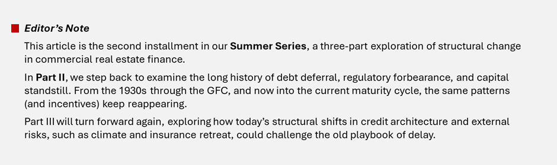
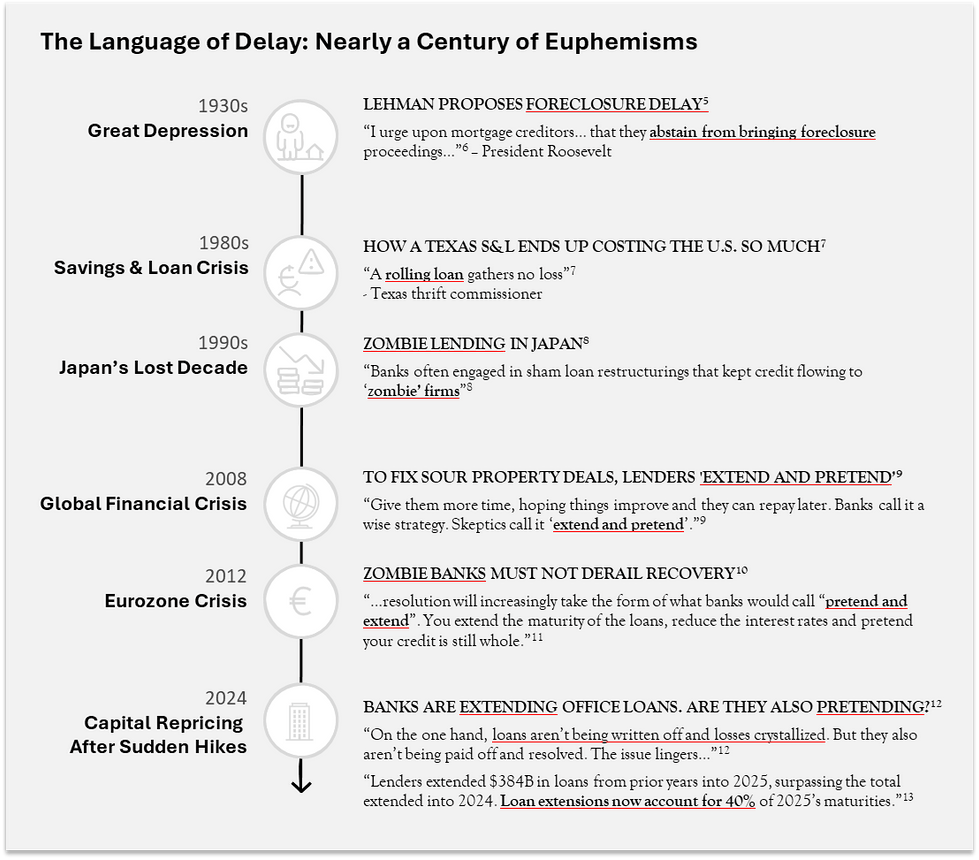
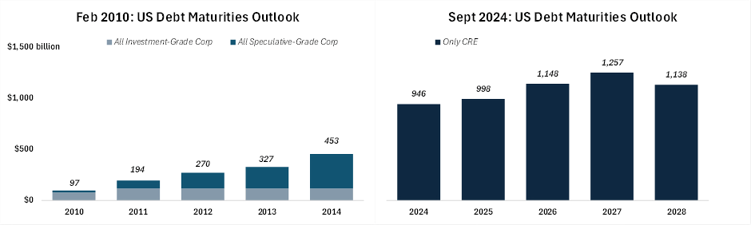
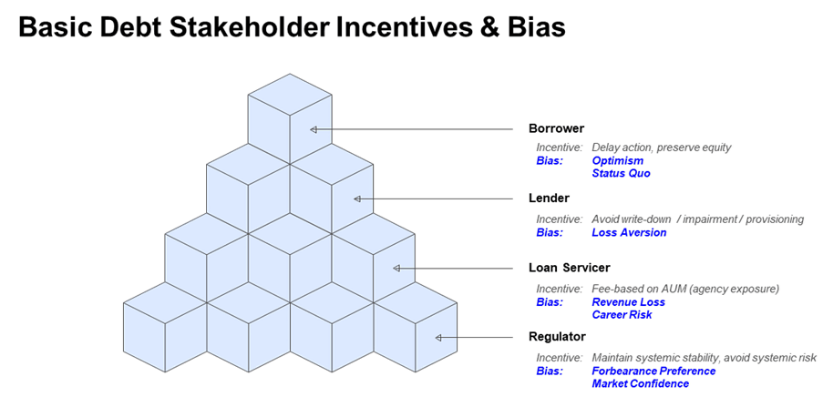

Summer Series Part II: Extend and Pretend, Again — A Behavioral History of Debt Deferral

The New Cycle of Delay Has Familiar Roots
In mid-2025, commercial real estate professionals are once again surrounded by phrases that feel both urgent and strangely recycled: “extend and pretend”, “maturity wall”, or “wave of expiries”. They appear in lender memos, investor calls, media interviews, and conference panels.
They sound like reactions to today's situation, but in reality they’re symptoms of a deeper financial muscle memory - one shaped by decades of navigating debt crises through strategic deferral. These terms, and the behaviours they describe, are part of a recurring cycle that stretches back at least a century in the historical record.
Each crisis has had different catalysts and market structures. But one common logic persists: when faced with hard losses, human psychology pushes systems to delay. Hope (not acceptance) becomes the primary strategy.
Delay as Doctrine: A Century of Debt Denial
The 2008 Global Financial Crisis (GFC) began in the residential mortgage market, where subprime RMBS and their derivatives triggered cascading losses across the global financial system. CRE came under pressure soon after, as refinancing channels froze and CMBS issuance collapsed. As defaults mounted, servicers and regulators prioritized extensions, workouts, and modified terms over foreclosure. The strategy aimed to stabilize asset values, preserve investor confidence, and avoid mass write-downs. The hope was that the Fed would save the market.
The phrase that captured this approach, and quickly entered the modern financial vernacular, was “extend and pretend”. Founder of Westwood Capital and future adjunct professor at Cornell Law, Daniel Alpert, helped popularize it - first quoted in a July 2009 article in the New York Times, and later in his own NYT op-ed weeks later [1][2].
But the approach and underlying psychology was far from new.
In 1990s Japan, property and equity prices collapsed. Rather than acknowledge losses, banks continued lending to insolvent borrowers to avoid recognition of impairment. The practice became known as “zombie lending”, a term coined the decade prior by a horror movie and comic book loving professor at Boston College [3]. This “zombie lending” kept balance sheets remained formally intact, but growth stagnated for years.
“[Professor Kane] was inspired by his love of comic books and horror movies to coin the now-ubiquitous term ‘zombie bank,’” [3]
The earlier Savings & Loan crisis in the US in the 1980s had a similar path. Hundreds of US thrifts were technically insolvent as rising interest rates destroyed the value of their long-dated mortgage assets. Rather than close the banks, regulators allowed them to operate in the hope that time would repair the damage. It did not. Losses mounted, and the resolution ultimately cost US taxpayers over $100B [4].
Even earlier, during the Great Depression of the 1930s, banks were quietly encouraged to hold impaired loans at face value. Regulators believed this would prevent mass liquidations in a distressed market. The approach helped avoid outright collapse in some cases but instead extended the period of financial paralysis.
Throughout each episode, the incentives aligned around a common pattern: preserve optionality, postpone recognition, and delay judgment in the hope that better conditions would materialize. Sometimes they did. Often they did not.

The “Maturity Wall” and the Fear of Time
Coming back to recent memory, around the time of the GFC, a new metaphor emerged: the “maturity wall.” Analysts at Moody’s began using the term to describe the wave of CRE debt set to mature between 2012 and 2014 [14]. It conjured the image of a structural challenge ahead, difficult to scale without financial distress.
The phrase caught on. It featured prominently on risk dashboards and investor materials. But by 2017, with the GFC in the rearview mirror, valuations recovering and lenders back in full swing, the term lost urgency. At the time, Trepp - a leading voice in commercial real estate analytics - described it that year as a “low hurdle” rather than a high barrier [15].
Today in 2025, the maturity wall metaphor is back again. According to recent industry estimates, more than $3.4 trillion in US CRE debt is scheduled to mature between now and the end of 2027 [16]. The refinancing environment is more difficult than it was a few years ago. Yields on real estate investments of all varieties have widened. Valuations have compressed. Fundamentals (particularly in office assets) remain unsettled.
The underlying concerns are similar to those feared in the wake of the GFC - loans backing deals that were underwritten in a lower-rate world are maturing into an environment where the business plans may no longer stack up, and current rates may not even be accretive to asset yields. Then, the concern was corporate leverage. Today it’s CRE. Yet the scale of maturities in this cycle dwarfs the last.

On a like-for-like five-year view, the 2010 debt maturity wall above amounted to 8.9% of U.S. GDP, whereas the 2024-28 wall now comes in at 18.8%.
But while the size of the wall has grown, the language surrounding it has lost its urgency. Market participants have heard the warning so many times, it now blends into the background - a kind of risk fatigue.
On a June 2025 TreppWire podcast episode, Lonnie Hendry noted the term’s exhaustion factor:
“We’ve kind of refrained from using [‘maturity wall’] at Trepp for the last year or so because people have just gotten tired of hearing it... if you say ‘maturity wall,’ people get visibly frustrated because of the extend and pretend...” [17].
The sentiment is telling. A phrase designed to highlight risk now seems to obscure it. Not because the wall has disappeared, but because repeated use seems to have eroded the feeling of urgency. Recent Fed research confirms this effect quantitatively. As extensions compound, maturities become more concentrated in the near term - a pattern visible in the dramatic steepening of the “wall” between 2021 and 2023 (see chart below).
![Source: Federal Reserve Bank of New York [18]](../../img/posts/b66aa8a3.png)
This chart shows the forward maturity profiles of CRE mortgages as reported by banks in 2020 through 2023. Each successive line reflects a growing concentration of near-term maturities, evidence of rolling extensions and deferrals accumulating at the same structural wall.
Euphemisms for Evasion (and Why They Work)
Finance has many euphemisms for delay: blend and extend, amend and pretend, delay and pray. Far from cynical, these phrases reflect a rational strategy in a world where recognizing loss can be systemically destabilizing.
Loan officers avoid charge-offs. Borrowers avoid guarantees. Investors avoid permanent impairment. Regulators avoid panic. All parties share a preference for optionality over resolution.
As Carmen Reinhart and Kenneth Rogoff note in This Time Is Different, debt crises often unfold not because of new risks, but because of forgotten ones [19]. Financial actors tend to believe their models are superior, their data more complete, and their safeguards more robust than those of past cycles.
The Architecture of Delay: Why Everyone Waits
Delays in recognizing loss are not just policy responses, rather they are the product of human behaviour, shaped by structure, incentive, and risk perception. In CRE lending, these dynamics are embedded in the relationships that underpin every loan.
At the top of the capital stack sits the borrower, seeking to preserve equity, delay impairment, and retain optionality. For sponsors facing floating-rate debt or expiring terms, delay buys time not just for asset performance, but for reputational defence. Lenders, whether banks or private funds, face their own constraints: crystallizing losses means regulatory capital hits or fund-level markdowns. Loan servicers, often compensated by volume or status, have few reasons to push for fast resolution. And regulators, particularly in banking systems, frequently tolerate delay to prevent systemic stress or fire sales.

Across this ecosystem, the path of least resistance is delay. Time becomes the least painful strategy when every stakeholder is aligned around uncertainty.
These incentives are reinforced by deeply studied cognitive patterns:
- Loss aversion drives participants to avoid crystallizing even small losses, preferring to gamble on recovery.
- Status quo bias makes inaction feel safer than decisive action, particularly in periods of market ambiguity.
- Agency risk emerges when those managing the assets (servicers, fund managers) are not directly exposed to loss but are measured by short-term performance or headline risk.
These behaviours are not just individual. They are institutional. As behavioural economist and Nobel laureate Richard Thaler observed, “Organizations, like individuals, avoid admitting mistakes. Losses are painful, and recognizing them is reputationally costly” [20]. In financial systems where stakeholders face asymmetric visibility and pressure, delay becomes a way of avoiding exposure, both economic and professional.
What may look like denial is often a rational adaptation. Few parties want to go first. And when market conditions are volatile but not yet broken, the easier decision for most is to wait.
“Never, ever, think about something else when you should be thinking about the power of incentives.” – Charlie Munger [21]
A Look Ahead: Different Players, Same Game?
The instinct to delay has not changed. But the structure of the system and the nature of the risks has.
In the next installment of this Summer Series, we turn to the forces that may finally break the pattern. The rise of private credit has pushed lending into corners that are less visible, less regulated, and harder to model. Liquidity mismatches, NAV-based lending, and rolling fund structures have created fragilities that defy traditional stress tests, and make a new form of contagion plausible.
And beyond the financial system lie the risks it cannot delay: from asset obsolescence and insurance withdrawal to regulatory acceleration, political volatility and conflict, or climate disruption.
These are not cycles to be managed or outwaited. They are structural shifts, and they may demand action before incentives align.
- Daniel Alpert. “Extend and Pretend,” The New York Times. Aug 1, 2009 ↩
- “The Banks Win Again”. The New York Times. Jul 10, 2009 ↩
- The Ohio State University Department of Economics. Obituary. Aug 2023 ↩
- U.S. GAO. “Resolution Trust Corporation’s 1995 and 1994 Financial Statements”. Jun 1996 ↩
- “LEHMAN PROPOSES FORECLOSURE DELAY; Suspension Until May Urged if Home Owners Have Paid Taxes and Interest. DEFICIENCY VALUES HIT Legislature Asked to Empower Supreme Court to Set Figure -- Bill Is Introduced. LEHMAN PROPOSES HOME MORATORIUM”. The New York Times. Aug 2, 1933
- “PRESIDENT SIGNS FARM BILL, MAKING INFLATION THE LAW”. The New York Times. May 13, 1933
- “How a Texas S&L Ends Up Costing the U.S. So Much”. Los Angeles Times. Dec 4, 1988
- “Zombie Lending in Japan”. Chicago Booth Review. Sep 1, 2006
- “To Fix Sour Property Deals, Lenders 'Extend and Pretend'". The Wall Street Journal. July 7, 2010
- “Zombie banks must not derail recovery”. The Financial Times. Feb 20, 2013
- “The economic consequences of Merkel mark three”. Financial Times Opinion. Sep 23, 2013
- “Banks Are Extending Office Loans. Are They Also Pretending?”. The Wall Street Journal. Apr 4, 2024
- Colliers. “Quick Hits | Loan Extensions Picked Up in 2024”. Mar 20 ,2025
- FTI Consulting. “Does the Corporate Debt Maturity Wall Really Exist?”. Nov 2023 ↩
- Trepp. “Wall of Maturities Becomes Low Hurdle”. TreppTalk. Jan 2017 ↩
- S&P Global. “Commercial real estate maturity wall $950B in 2024, peaks in 2027”. Sep 2024 ↩
- TreppWire Podcast Ep. 336. “What Recession? Making Sense of (Constantly) Revised Macro Data & What It Means for CRE”. Jun 2025 ↩
- Matteo Crosignani and Saketh Prazad. “Extend-and-Pretend in the US CRE Market”. Federal Reserve Bank of New York. Oct 2024 ↩
- Carmen M. Reinhart and Kenneth S. Rogoff, “This Time Is Different”, Princeton University Press, 2009 ↩
- Thaler, R. H. “Misbehaving: The making of behavioral economics”. W. W. Norton & Company, 2015 ↩
- Munger, C. T. “The psychology of human misjudgment” [Speech transcript], Farnam Street, 1995 ↩